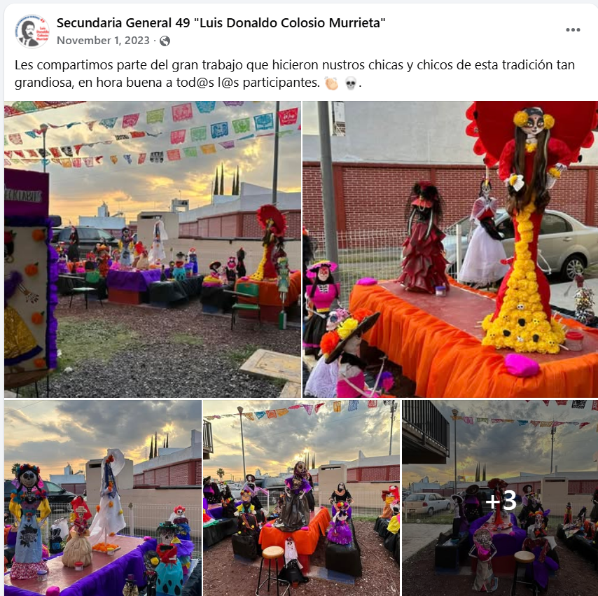

Día de Muertos
Tradición, cultura y participación de la comunidad escolar.
Leer entradaSitio informativo de la Escuela Secundaria General No. 49 “Luis Donaldo Colosio Murrieta”.
Conoce información de la institución, trámites, ubicación, actividades y contenidos de interés para la comunidad escolar.
Conoce nuestra escuela
Tradición, cultura y participación de la comunidad escolar.
Leer entradaCinco ideas sencillas para organizar mejor el aprendizaje.
Leer entradaVideo y recomendaciones para navegar y compartir información con mayor cuidado.
Ver entrada